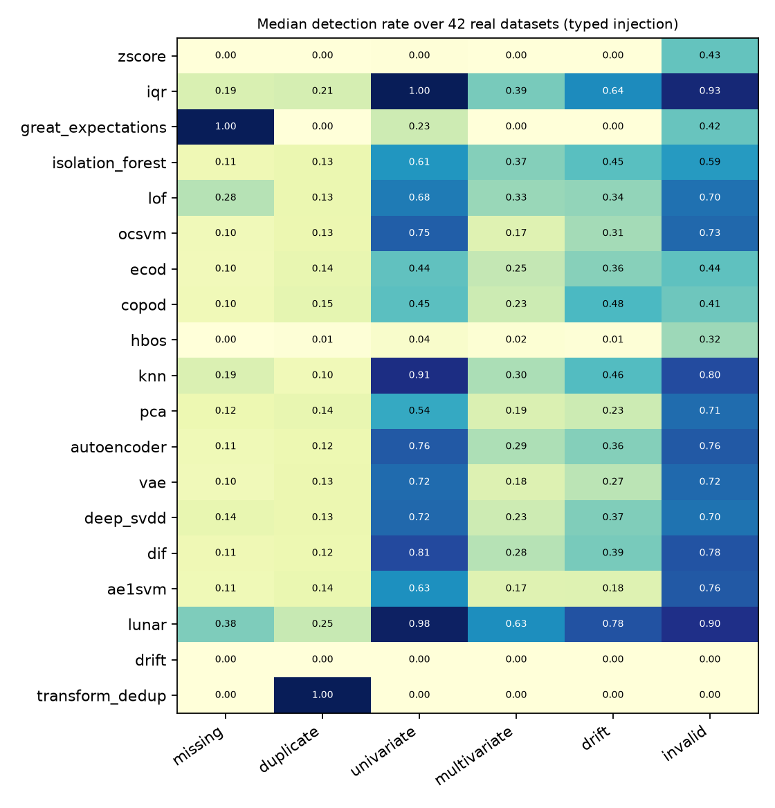
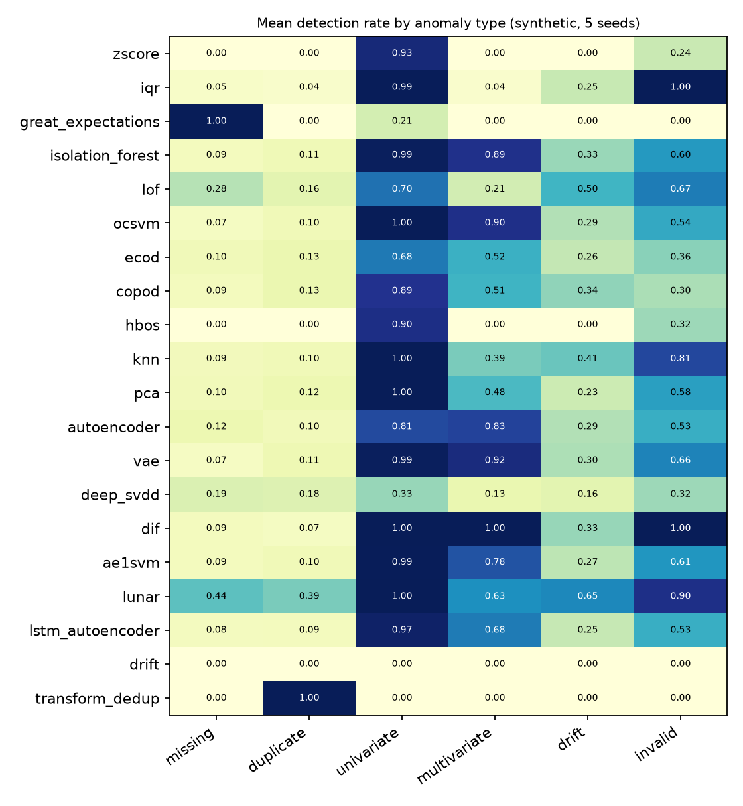

Anomaly detection for data quality, measured inside the ETL pipeline
Rules, classical and neural detectors run through one pipeline and compared per anomaly type. Living progress deck, 2026-11-12.
Does machine learning in an ETL pipeline beat plain rules, and for which anomalies?
Rules are the industry default: auditable, cheap, and blind to what the author did not anticipate. Recent work puts ML detectors inside the flow, but on one algorithm and one dataset. This thesis builds the missing head-to-head benchmark and breaks the result down by anomaly type.
Pipeline. Algorithms are scored outside any pipeline; integration cost is not measured.
Rules. The declarative baseline that dominates production is absent.
Types. One aggregate score per dataset hides which family finds which defect.
Threshold. One flag threshold, not the precision-recall trade-off.
Benchmarks rank detectors. Few report their decisions
| Work | Time order | At a threshold |
|---|---|---|
| ADBench, 30 algorithms, 57 sets | not found | not found (AUC) |
| Agyemang 2024, one simulated set | none | precision, recall, F1 |
| AnoShift, Kyoto 2006 to 2015 | IID, NEAR, FAR | not found (AUC) |
| FedAD-Bench, federated deep | not found | F1-optimal threshold |
| Sun et al. 2024, online thresholds | shift in a stream | error-rate guarantees |
In the texts I read, ADBench and AnoShift report AUC only, and none of these works breaks results down by data-quality fault.
The scan is not systematic: this is a gap I did not find filled, not a proof that nothing exists. References were checked against a primary source or the DOI registry.
Four questions, one study each, hypotheses written first
Rules, classical and neural detectors in one pipeline
historical ranking, train-only replay pending
Which anomaly type each family finds
narrow competence; values do not transfer
Operating point and time
a threshold fixed on the past fails when prevalence moves
Cost in the pipeline
neural 10 to 100 times column-wise
A controlled dataset that labels six anomaly types separately
12,360 records generated with Faker and NumPy, six types injected at 3% each, every row tagged with its category. Recall and precision are reported per type, which generic benchmarks that publish one aggregate score do not provide.
One interface, one measured path
The demo and every benchmark call the same detect() stage. A continuous score() on top of the boolean predict() makes ROC-AUC and AP computable; detect(fit_df=...) fits on the train slice and scores the test set.
Exact deduplication belongs to the ordinary transform. Typed injected duplicates remain in their separate evaluation with transform_dedup.
# every detector, one contract class Detector(ABC): name: str def fit(self, df) -> Self: ... def predict(self, df) -> Series: # bool/row ... def score(self, df) -> Series: # graded return self.predict(df).astype(float) # classical ML: adapt PyOD, do not reimplement class PyODDetector(Detector): ... # registry: one line per detector "isolation_forest": lambda: IsolationForestDetector(),
Average Precision measures the ranking
AP differs from trapezoidal precision-recall area.
Prevalence is the no-skill reference. Constant scores give AP equal to prevalence.
Changing only the flag threshold leaves AP and ROC-AUC unchanged; neither fixes a useful operating point.
Rules and classical models, one contract
| Detector | Family | Principle | Main limit |
|---|---|---|---|
| Z-score | rule | flag |z| > 3 on any column | mean and std inflated by outliers |
| IQR | rule | Tukey fences, k = 1.5 | fires often in high dimension |
| Great Expectations | rule | null checks, fitted 0.1% / 99.9% bounds | generic suite, no domain rules |
| Isolation Forest | joint | isolation depth under random splits | axis-aligned splits, weak on nulls |
| LOF | joint | local density against 20 neighbours | cost grows with the scored set |
| One-Class SVM | joint | RBF boundary around the bulk | quadratic training |
| ECOD | column-wise | empirical tail probabilities, summed | no explicit cross-feature dependence |
| COPOD | column-wise | max of skew term and mean log tails | same |
| HBOS | column-wise | histogram per column, inverse bin height | independent columns, coarse bins |
| KNN | joint | distance to the 5th neighbour | quadratic, skipped above 50k rows |
| PCA | joint | reconstruction error, 95% of variance | misses a shift inside the kept space |
| drift | time-aware | recent-window mean shift | per row, so diluted drift is invisible |
Column bounds do not fix row alert rates
Maximum |x − training mean| / sample standard deviation. Flag above 3; constant columns contribute zero.
Training fences Q1 − 1.5 IQR and Q3 + 1.5 IQR. Flag strictly outside; zero-IQR columns contribute zero.
Not-null on all columns; inclusive training quantiles 0.1% and 99.9%. Score: fraction of active checks violated.
Per-column tails: 0.27% beyond 3σ, 0.70% beyond the IQR fences (about 2.7σ). Fitted bounds and several columns change row-level rates.
All statistics come from training data. The evaluated Great Expectations suite is a generic statistical baseline: no domain-specific category, format or cross-field rules.
Neural detectors behind the same contract
| Detector | Principle | Fixed or noted |
|---|---|---|
| Autoencoder | rebuild standardized rows through a bottleneck | MLP from scikit-learn |
| VAE | Gaussian code, rebuild, reconstruction error | scored with the code mean; PyOD draws one |
| Deep SVDD | map normal rows near a centre, distance | weakest on most types |
| DIF | isolation forests on random neural features | training representation scaler reused |
| AE1SVM | autoencoder + random-Fourier one-class SVM | singleton padding changes training weight |
| LUNAR | network learns the score from neighbour distances | best on drift, many false alarms |
PyOD 3.6.7 with recorded adaptations, CPU, seeded, fitted on at most 20,000 rows.
Frozen representation scaling and latent-mean scoring change the evaluated algorithms. They do not establish equivalence to upstream defaults.
The LSTM autoencoder reads windows of ordered rows and stays outside the registry.
Stable row scores require explicit adaptations
A fitted ETL detector must score a row without consulting other evaluation rows. Contract tests check the 17 row-level detectors; the time-window monitor has a different contract.
PyOD 3.6.7 recomputes tails and skew with the evaluated batch. Here ranks and skew signs are frozen from training.
COPOD adds marginal contributions: it is not a fitted general joint copula. ECOD takes the max of both log tails and the skew term.
VAE decodes the latent mean; DIF reuses a training scaler; AE1SVM padding reweights its last row. These are algorithm changes.
Bounded tests support batch independence, not universal equivalence. Separate ablations remain open; historical results keep their actual adapted configurations.
Historical pool preparation needs revalidation
Column filtering, category vocabulary and conflicting-label removal happen before the split. Training-only medians and scaling do not isolate those earlier decisions.
Constructed negative controls: changing only the evaluation categories changes the encoded width from 5 to 3; an evaluation duplicate's label can remove a reference row. The effect on AP is not yet quantified.
Consumes source-bound frozen positions. Fitted schema, imputation and scaling use training rows only. Cross-partition duplicates are rejected; evaluation rows are retained. Targets are excluded from preparation.
Bounded checks enforce full line and branch coverage for the two new modules and detect three leakage defects.
Historical memberships were recomputed (not originally archived) and replay-validated: the Z-score reproduces all 100 archived per-seed results. Replaying the studies on the train-only path remains outstanding. Old protocols and results are preserved, and no corrected pool-performance claim is available.
What the detectors actually find
Three example datasets, then six anomaly types on a controlled generator and on real tables.
Three example datasets bracket the method
| Dataset | Rows | Feat. | Anom. | Role |
|---|---|---|---|---|
| Credit Card Fraud | 283,726 | 30 | 0.17% | rare, but a mixed-defect label |
| Cardio | 1,831 | 21 | 9.6% | rare and outlying, the fitting regime |
| Water Quality | 3,276 | 9 | 61% | target class common, wrong regime |
| Synthetic per-type | 12,360 | 9 | 17.5% | controlled, 6 labelled types |
Stratified 70 / 15 / 15 split, fit on train, every number reported on the held-out test set. Five seeds, mean ± std. The ML contamination is read from the train-set prevalence, not fixed at 10%.
The magnitudes are a swept parameter, not a fixed choice
| Type | Injection |
|---|---|
| missing value | 1 to 2 of {income, balance, avg amount, tenure, n txn, email, country} set to null |
| duplicate | exact copy of a sampled clean row, id included (appended, not replaced) |
| univariate | one numeric column × U(15, 45) × severity |
| multivariate | marginals at the (1 − 0.03 / severity) percentile of the clean data |
| temporal drift | signup in the last 80 days; income × (1 + 0.55 · severity), similar for balance and amount |
| invalid format | email malformed; age impossible; country out of domain |
Severity 1.0 is the reference dataset. Missing values, duplicates and invalid formats have no magnitude to scale. Five types replace clean rows; duplicates are appended. Sweeping the multiplier turns "we picked the magnitudes" into a curve, and the per-type ranking does not change (severity slide).
Aggregate scores do not establish equivalence.
Per-type results show different competencies.
The operating point decides the outcome
| Detector | Prec | Rec | F1 | ROC | PR | Flag % | Time |
|---|---|---|---|---|---|---|---|
| Z-score | 0.011 | 0.870 | 0.021 | 0.926 | 0.078 | 13.4 | 0.03 s |
| IQR | 0.003 | 0.966 | 0.007 | 0.911 | 0.018 | 48.6 | 0.12 s |
| Great Expectations | 0.037 | 0.676 | 0.070 | 0.830 | 0.182 | 3.1 | 1.37 s |
| Isolation Forest | 0.202 | 0.206 | 0.203 | 0.934 | 0.120 | 0.2 | 1.78 s |
The statistical rules recover most frauds at precision below 0.04. Isolation Forest changes once its contamination matches the prevalence: it flags 0.17% of rows and reaches the first usable precision, at recall 0.21 and with real seed variance (F1 = 0.20 ± 0.07). Great Expectations leads AP.
When anomalies are rare and outlying, the learned detectors work
| Detector | Prec | Rec | F1 | ROC | PR | Flag % |
|---|---|---|---|---|---|---|
| Z-score | 0.49 | 0.82 | 0.61 | 0.93 | 0.61 | 16.6 |
| IQR | 0.21 | 0.90 | 0.34 | 0.78 | 0.30 | 43.4 |
| Great Expectations | 0.51 | 0.21 | 0.29 | 0.59 | 0.19 | 4.6 |
| Isolation Forest | 0.64 | 0.62 | 0.62 | 0.95 | 0.70 | 9.9 |
| LOF | 0.25 | 0.27 | 0.26 | 0.62 | 0.24 | 10.7 |
| One-Class SVM | 0.56 | 0.61 | 0.58 | 0.94 | 0.63 | 10.7 |
Isolation Forest reaches F1 0.62 and AP 0.70, with ECOD, COPOD and DIF close behind (AP 0.69, 0.69, 0.67). Z-score also does well: the 21 features are standardized and anomalies stand out on several at once.
Aggregate scores hide different trade-offs
| Detector | Prec | Rec | F1 | ROC | PR |
|---|---|---|---|---|---|
| rules and classical | |||||
| Z-score | 1.000 | 0.196 | 0.328 | 0.742 | 0.544 |
| IQR | 0.584 | 0.396 | 0.472 | 0.675 | 0.452 |
| Isolation Forest | 0.495 | 0.499 | 0.497 | 0.735 | 0.485 |
| One-Class SVM | 0.478 | 0.485 | 0.481 | 0.722 | 0.520 |
| ECOD | 0.341 | 0.341 | 0.341 | 0.675 | 0.283 |
| HBOS | 1.000 | 0.204 | 0.339 | 0.602 | 0.343 |
| KNN | 0.466 | 0.469 | 0.467 | 0.745 | 0.520 |
| neural | |||||
| VAE | 0.502 | 0.507 | 0.504 | 0.742 | 0.548 |
| DIF | 0.589 | 0.582 | 0.585 | 0.772 | 0.648 |
| LUNAR | 0.345 | 0.668 | 0.410 | 0.728 | 0.495 |
Z-score and HBOS reach a perfect precision by firing only on extreme rows (recall 0.20). DIF has the best F1 and AP, the VAE matches Isolation Forest, LUNAR has the best recall with a low precision.
Each method has a narrow competence
Z-score owns univariate outliers (0.93). Great Expectations owns missing values (1.00). Deduplication owns exact duplicates.
Isolation Forest (0.89) and the One-Class SVM (0.90) are the only first-six methods with real recall on multivariate outliers; every rule stays at 0.04 or below.
Broad coverage needs several families, not the single best one.
Detection rate alone can be gamed
Isolation Forest and the One-Class SVM on multivariate outliers: they cast a wide net that also catches clean rows.
Z-score fires only when it is certain: on the whole synthetic set its precision is 1.00 and its recall 0.196.
One threshold hides the whole trade-off

On Cardio the Isolation Forest and One-Class SVM curves stay high (AP 0.80, 0.76). On Water Quality every curve hugs the 0.61 base-rate line. On Credit Card Fraud two methods dominate but neither clears precision 0.4 except at negligible recall.
The per-type ranking is stable as the magnitudes scale

Univariate outliers are saturated already at severity 0.5. Multivariate outliers show a threshold. Temporal drift climbs roughly linearly for the distributional detectors: the reference drift is below every method's floor, not a property of the methods. The same families lead the same columns at every severity.
From three examples to a pool of 152
Real tables, pinned and checked; what holds, what fails, and what changes with time.
A pool of 152 open datasets, pinned and checked
(celeba, mammography, vowels ...)
(version duplicates, rule-labelled, boards)
Historical pool rankings need train-only revalidation
| Detector | Problems | AP median [95%] | ROC-AUC | Rank |
|---|---|---|---|---|
| ECOD | 100 | 0.240 [0.191, 0.305] | 0.656 | 7.0 |
| One-Class SVM | 84 | 0.240 [0.177, 0.307] | 0.670 | 8.0 |
| HBOS | 100 | 0.237 [0.176, 0.311] | 0.663 | 8.0 |
| DIF | 100 | 0.226 [0.173, 0.272] | 0.639 | 8.0 |
| VAE | 100 | 0.216 [0.163, 0.279] | 0.676 | 7.0 |
| COPOD | 100 | 0.216 [0.162, 0.314] | 0.691 | 7.0 |
| Isolation Forest | 100 | 0.215 [0.158, 0.293] | 0.677 | 7.0 |
| AE1SVM | 100 | 0.210 [0.172, 0.253] | 0.635 | 8.0 |
| Autoencoder | 100 | 0.205 [0.150, 0.240] | 0.631 | 8.0 |
| Z-score | 100 | 0.203 [0.164, 0.279] | 0.626 | 9.0 |
| KNN | 92 | 0.203 [0.172, 0.284] | 0.658 | 8.0 |
| LUNAR | 100 | 0.183 [0.153, 0.225] | 0.615 | 10.0 |
| Deep SVDD | 100 | 0.181 [0.147, 0.226] | 0.619 | 10.0 |
| PCA | 100 | 0.178 [0.152, 0.219] | 0.581 | 10.0 |
| LOF | 92 | 0.165 [0.153, 0.237] | 0.588 | 10.0 |
| IQR | 100 | 0.144 [0.117, 0.191] | 0.556 | 12.0 |
| Great Expectations | 100 | 0.115 [0.105, 0.123] | 0.508 | 16.0 |
Three rules, eight classical and six neural detectors, five seeds, on 36 ADBench and 64 UCI problems. The table is retained as recorded.
Schema and row filtering precede the split, so these descriptive rankings still need train-only replay.
The 100 problems come from 80 sources; a source-clustered re-analysis changes no sign (only Great Expectations is clearly below Isolation Forest). Label-rule sensitivity and unrecorded PyOD convergence diagnostics remain open.
Two regimes the three examples do not show
| AP | Credit Card | Cardio | Annthyroid | Mushroom |
|---|---|---|---|---|
| Z-score | 0.10 | 0.61 | 0.18 | 0.44 |
| IQR | 0.02 | 0.30 | 0.61 | 0.10 |
| Isolation Forest | 0.13 | 0.70 | 0.29 | 0.63 |
| ECOD | 0.21 | 0.69 | 0.28 | 0.41 |
| HBOS | 0.26 | 0.58 | 0.24 | 0.50 |
| Autoencoder | 0.11 | 0.35 | 0.14 | 0.68 |
| DIF | 0.27 | 0.67 | 0.23 | 0.45 |
| LUNAR | 0.15 | 0.33 | 0.20 | 0.96 |
Chosen after the results, as illustrations, not as a test. Mean over 5 seeds, as run in the pool. All 17 detectors are in the paper.
The synthetic pattern does not simply carry over

Six anomaly types injected into 42 real UCI tables (3% of rows per type, same split and settings as the synthetic run). Protocol and five hypotheses were written first. Two rows hold everywhere: Great Expectations finds all missing values, deduplication all duplicates. Three hypotheses are not supported.
Two failures that are explained, not hidden
Median 0.00 against 0.93 synthetic. A check made after seeing it, so exploratory: invalid rows in the training split inflate the standard deviation (masking). Without them the Z-score finds every univariate outlier on all 42 tables.
The IQR fences reach the best detection rate on several types, but only by flagging a median 22% of clean rows; the false positive rate reaches 99% on some wide tables. Detection rate has to be read next to it.
Time changes the answer: a threshold from training does not travel
| Detector | PR strat. | PR chrono | ROC chrono | Flag % |
|---|---|---|---|---|
| Z-score | 0.078 | 0.048 | 0.935 | 12.8 |
| IQR | 0.018 | 0.013 | 0.917 | 47.1 |
| Great Expectations | 0.183 | 0.045 | 0.758 | 3.5 |
| Isolation Forest | 0.110 | 0.035 | 0.936 | 0.08 |
Credit Card is the only dataset with a clock. Detectors are fitted on the first 70% of time and scored on the last 15% (52 frauds). Average precision drops for all four detectors, but the interval excludes the stratified mean only for Great Expectations and Isolation Forest.
Prevalence also changes between partitions, so the pilot does not separate it from the effect of time.
Part of the gap is only the prevalence
| F1 at the threshold | P0 training | P2 rolling |
|---|---|---|
| Bank, Z-score | 0.51 | 0.02 |
| Bank, Isolation Forest | 0.41 | 0.11 |
| Credit Card, Z-score | 0.00 | 0.09 |
| Credit Card, Great Expectations | 0.00 | 0.09 |
Credit Card and Bank Marketing (UCI, ordered by date 2008 to 2010), four detectors, three label-free thresholds. On Bank Marketing the prevalence goes from 5.8% in training to 39.3% in test: matching the stratified control to it removes most of the gap. A rolling threshold that keeps the training prevalence cannot follow it.
One hypothesis of four holds.
A nominal alert budget is not a promise
| Change at a 2% budget | Δ alert / budget [95%] | Δ ROC-AUC |
|---|---|---|
| Evaluated scores shifted +1 σ | +4.09 [3.50, 4.77] | 0.000 |
| Evaluated scores scaled ×2 | +4.86 [4.57, 5.19] | 0.000 |
| Noise of 1 σ on the scores | +1.55 [1.32, 1.81] | −0.038 |
| Every feature drifted ½ σ | +20.90 [17.39, 24.55] | −0.051 |
| Monotone change of fit and test scores | +0.001 [0.000, 0.003] | 0.000 |
Budgets of 0.5 to 10% are set from training scores only, on 100 labelled problems. Held-out alert volume was 1.05 to 1.36 times the nominal 1% budget for classical detectors and 1.13 to 2.87 times for neural ones.
The deeper studies, run on all 152 datasets
| Hypothesis | Result | Value | |
|---|---|---|---|
| P1 | label-free threshold lowers F1 | holds | 14 of 17 detectors |
| P2 | curve ranking = AP ranking | fails | Spearman 0.90 (< 0.99) |
| P3 | recall rises with severity | fails | 13 of 17; column-wise rules stay at 0 |
| P4 | detection share of the pipeline | holds | 62% (IF), 4% (Z-score), 14 datasets |
| P5 | chronological AP lower | fails | 31 of 64 pairs; Bank Marketing 0/16 |
| P6 | files match the manifest | holds | 152 of 152 |
An LSTM autoencoder is comparable, not clearly better
Against Isolation Forest (0.035) and Great Expectations (0.045) it is comparable. Paired bootstrap, main seed: +0.021 [+0.005, +0.044]; on the other four seeds the interval includes 0.
The window is the ten previous rows of the global stream, since Credit Card has no cardholder. Protocol and a CPU budget of 20 epochs were fixed beforehand.
None of five trainings converged within the 20-epoch budget. Recall of frauds in the later period is at most 0.02. In the per-type matrix the LSTM does not fix drift.
The profile carries over, the values do not
| Mean recall, 5 seeds | customers | transactions | sensors |
|---|---|---|---|
| carries over exactly | |||
| Great Expectations, missing values | 1.00 | 1.00 | 1.00 |
| does not carry over | |||
| Isolation Forest, multivariate | 0.89 | 0.49 | 0.32 |
| One-Class SVM, multivariate | 0.90 | 0.18 | 0.33 |
| best detector, drift | 0.50 | 0.38 | 0.96 |
More detectors, same competence map, one exception

Eleven rows added to the synthetic matrix, with three hypotheses written beforehand; none holds. ECOD and COPOD find 0.5 of the multivariate outliers although they read one column at a time; PCA reaches 0.48 against 0.83 for the autoencoder.
LUNAR catches 0.65 of the drifted rows (LOF 0.50) while flagging 41% of clean rows. The LSTM still does not fix drift.
Detection latency is not pipeline latency
| Detector | 10k rows | 100k rows | 300k rows | Memory MB |
|---|---|---|---|---|
| Z-score | 0.002 s | 0.013 s | 0.039 s | 70 |
| IQR | 0.004 s | 0.029 s | 0.086 s | 116 |
| Isolation Forest | 0.16 s | 1.09 s | 3.2 s | 140 |
| LOF | 0.73 s | 18.0 s | 133 s | 405 |
| One-Class SVM | 5.6 s | >300 s | not run | 788 |
| ECOD / COPOD | 0.045 s | 0.68 s | 2.4 s | 186 |
| KNN | 0.45 s | 11 s | 68 s | 148 |
| VAE | 6.8 s | 69 s | 209 s | 105 |
| DIF | 23 s | 262 s | >300 s | 2,748 |
On the full Credit Card file the Z-score pipeline takes 4.8 s, of which detection is 3%. Isolation Forest takes 8.5 s, with detection at 43 to 45%.
Anomaly type to method
| Anomaly type | Use | Recall | Why |
|---|---|---|---|
| missing value | Great Expectations | 1.00 | not-null expectation, exact |
| exact duplicate | transform dedup stage | 1.00 | row equality, not a detector's job |
| univariate outlier | any statistical rule | 0.93 to 0.99 | a single-column band is enough |
| multivariate outlier | Isolation Forest or One-Class SVM | 0.89 to 0.90 | only the joint models see it (precision about 0.22) |
| temporal drift | windowed monitor | per-row at most 0.65 | sub-threshold per row; LUNAR 0.65 flags 41% of clean rows |
| invalid format | IQR for the numeric part | 1.00 (IQR) | numeric part caught; malformed strings need a format rule |
Two of six types are not a per-row detector problem at all: duplicates belong to the transform stage, drift to a windowed monitor. A single aggregate ranking would never surface that.
Unsupervised detection works in one of three regimes
0.17% positives, and the label mixes every defect. Best F1 of seventeen detectors is 0.35 (Deep SVDD), best precision 0.34 (HBOS).
9.6%, rare and distinct. Isolation Forest F1 0.62, AP 0.70. The regime the detectors are built for.
61% majority target. Every ROC-AUC 0.45 to 0.51: the detectors are at chance. A useful negative result.
The question is less "rules or ML" than "does this dataset have rare, outlying anomalies at all". The synthetic dataset sits in the middle at 17.5% and is where the per-type structure is measured. Pipeline cost narrows the shortlist: One-Class SVM and LOF do not survive the full fraud dataset.
Findings from the build
Each of these became a paragraph in the paper. The recurring lesson: the setup around a detector, the operating point, the regime and the pipeline cost matter as much as the algorithm.
Contamination equal to prevalence instead of a fixed 10% moves Isolation Forest fraud precision from 0.01 to 0.20.
Cardio F1 0.62. Fraud, mixed label: nothing usable. Water Quality: at chance.
Imputing removes the signal a not-null rule catches for free: GX recall 1.00 against 0.07 to 0.28.
Per-row failures need the COMPLETE result format plus an explicit index column; found by probing the installed library.
ECOD, COPOD and DIF use the scored rows for their statistics, the VAE draws a random code, AE1SVM crashes on a last batch of one row. Recorded adaptations, with 17 batch-independence checks; not upstream-equivalence claims.
Once diluted by clean recent rows, the window mean has moved by about a tenth of a standard deviation.
What the tests protect, and what they do not
Verification of the code that produces the numbers, and mutation testing as a way to see its blind spots.
Historical verification has a defined scope
| Check | Result | Scope |
|---|---|---|
| line coverage | 1,790 / 1,790 | pipeline modules and experiment scripts |
| branch coverage | 350 / 350 | same scope |
| mutation, computing code | 95.68% | split, metrics, generator, detectors |
| mutation, input / output | 98.87% | readers, writers, scripts |
| fault injection | 23 / 23 | four went through every earlier test |
| real-data check | pass | three CSV files, manuscript tables match |
These measurements belong to local run d4304c5. They cover the core pipeline and experiment scripts, with separate verifier checks.
They do not certify the new research modules or establish scientific validity. The run is not independently attested.
A mutant is a deliberately broken copy of the code
# research/alert_budget.py - flags = scores > info["threshold"] + flags = scores >= info["threshold"]
Coverage says a line ran. It does not say a test would notice if the line were wrong.
A tool makes many such copies, one change each, and runs the test suite against every copy.
The tests are the light. A mutant is killed when a test sees it
A survivor matters because it is either a behaviour no test protects (a gap to close with a new test), or a change that cannot be observed (an equivalent mutant, next slide). It stays in the count of eligible mutants (the denominator of killed / eligible) until one of the two is shown.
Some changes cannot be seen, and only the owner may say so
A change that does not alter what the program does, so no test can fail on it. Example: changing x > 0 to x >= 0 where x can never be 0. Candidates in this work: a dtype coercion on an array that is already float, zip(strict=) on lists of equal length, a flush= on a print.
Calling a survivor equivalent removes it from the denominator and raises the score. If the author of the tests could do that alone, the author would grade their own work. The repository records each equivalence, with its reason, as accepted by the owner.
Status here: the candidates above are not approved and stay in the denominator. The four equivalences accepted earlier for the LSTM autoencoder were accepted by the repository owner, who is also the sole author and reviewer: that is owner approval, not independent review.
The bar rises with the scientific risk of the code
Each module has a risk level, and each level a minimum share of mutants that tests must kill.
L4, the highest, is code whose bug would change a reported result. Its bar is 98%.
The thresholds were not changed and no module was reclassified.
Nine chosen modules: seven reach the 98% bar, two do not
Raw and adjusted scores differ, and the raw one leads
Below the 98% bar for L4. Every survivor counts.
Four mutants removed as equivalent. They were accepted by the repository owner, who is the sole author and reviewer: not an independent review.
A focused pass does not certify the repository
31 L4 modules below threshold and 25 incomplete in that campaign.
Survivors that look inert (dtype coercions, zip strict) await an owner decision.
The minimum anomaly count, 3, is below the 6 a stratified 70 / 15 / 15 split needs. No archived result changes.
The release gate fails and stays closed. No full campaign was run in this phase.
Experiments run, paper in IMRaD form
held-out split, 5 seeds, chronological and LSTM pilots, cost study
pool of 152 sets (#66), typed injection on 42 tables (#65)
benchmark on the 100 labelled pool problems
deep rows (#64), multi-schema generator (#67)
IMRaD restructuring (#68, #69, #85); bibliography audit remains #101
decision-level study under shift (#63)
complete registry of 17 detectors, every study rerun
every study extended to the 152-dataset pool, six hypotheses
Detector and source audits, source-aware statistics, archive replay, publication corrections (issues #89, #91, #100, #103).
The roadmap preserves T001 to T415. 91 of 415 are checked as of 2026-11-11, including T163 to T171 of #94. T172, T062 and T063 remain open, as do the issues.
Optional P2 research is outside the active scope.
Rules and machine learning are complementary by anomaly type.
Across the three examples, unsupervised detection pays off only on Cardio, where anomalies are rare outliers. On 100 labelled pool problems, rankings need train-only revalidation. On 42 real tables with injected types, the synthetic pattern holds only in part, which is why the real-data matrix is the differentiator.